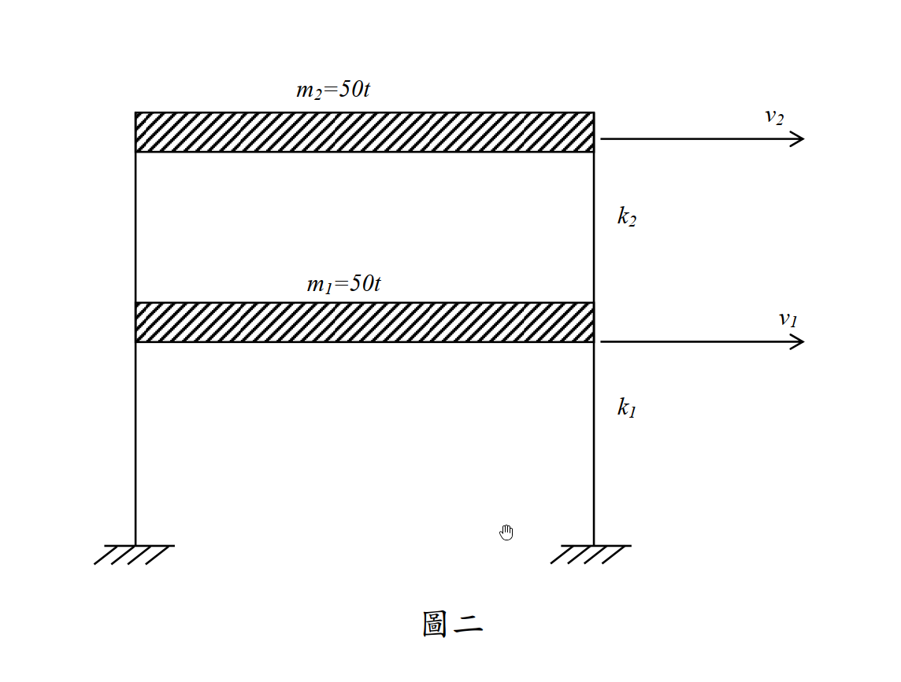

考題編號：SD-2015-2
主分類： SD-U1-3 單自由度、多自由度系統之動態分析及應用
副分類： SD-U1-2 結構系統之數學模型及運動方程式
分析方法： MDOF 特徵值分析
標籤： MDOF, 剪力屋架, 質量矩陣, 勁度矩陣, 特徵值問題, 自然頻率, 振態向量, 單位換算
1. 題目重述
有一兩層樓剪力層架如圖二，各層質量 $m_1 = m_2 = 50\text{ t}$。已知第一層層間勁度 $k_1 = 300\text{ tf/cm}$，第二層層間勁度 $k_2 = 200\text{ tf/cm}$。試求：
- 建立該系統之質量矩陣 $\mathbf{M}$ 與勁度矩陣 $\mathbf{K}$。（5 分）
- 求該系統之自然頻率 $\omega_1, \omega_2$ 與對應之振態向量 $\boldsymbol{\phi}_1, \boldsymbol{\phi}_2$。（20 分）
附圖：

2. 破題思路 (Problem Solving Strategy)
本題為最經典的雙自由度 (2-DOF) 剪力建築自然頻率與振態分析：
- 建立系統矩陣：根據剪力建築假設，將各樓層視為集中質量建立對角線質量矩陣 $\mathbf{M}$；並以層間勁度 $k_i$ 組合出帶狀勁度矩陣 $\mathbf{K}$。
- 處理單位問題：注意質量單位為公噸 ($\text{t}$)，勁度單位為噸力每公分 ($\text{tf/cm}$)，兩者相除會得到含重力加速度 $g$ 與長度轉換的數值，必須轉換為標準的徑度每秒 ($\text{rad/s}$)。
- 特解特徵值方程式：求解 $|\mathbf{K} - \omega^2\mathbf{M}| = 0$，由於數字經過特別設計，可得一元二次方程式並輕鬆十字交乘分解求得兩根。
- 回代求振態：將特徵值分別代回 $(\mathbf{K} - \omega_n^2\mathbf{M})\boldsymbol{\phi}_n = \mathbf{0}$，令頂層或底層位移為 1 即可求得標準化之振態向量。
3. 解題戰略地圖與陷阱分析 (Strategic Roadmap & Trap Analysis)
四大陷阱：
| # | 陷阱 | 正確處理 |
|---|---|---|
| 1 | 單位換算錯誤 | 這是最多人出錯的地方。$\frac{\text{tf/cm}}{\text{t}} = \frac{g}{\text{cm}}$，若取 $g=981 \text{ cm/s}^2$，則 $\frac{\text{tf/cm}}{\text{t}} = 981 \text{ s}^{-2}$。直接開根號會少乘 $\sqrt{981}$。 |
| 2 | 勁度矩陣元素組合錯誤 | $K_{11}$ 必須是 $k_1 + k_2$ 而非僅 $k_1$；$K_{22}$ 才是 $k_2$。務必畫自由體圖或用勁度係數定義確認。 |
| 3 | 質量矩陣非對角化 | 題目已明示為剪力層架，質量集中於樓板，因此 $\mathbf{M}$ 必為純對角矩陣。 |
| 4 | 振態向量正交性未檢查 | 解完 $\boldsymbol{\phi}_1, \boldsymbol{\phi}_2$ 後，最好心算檢查 $\boldsymbol{\phi}_1^T \mathbf{M} \boldsymbol{\phi}_2 = 0$，確保無計算錯誤。 |
3.5 變數層次分析（Variable Hierarchy Analysis）
複習提示：第一次解題後，在每個卡住的知識點旁標記
⚠；第二次複習時只看有⚠的項目。
最終目標
[建立矩陣 M, K → 求解特徵方程式得自然頻率 ω₁, ω₂ → 代回求振態向量 φ₁, φ₂]
本題關鍵公式（依計算順序）
$\boxed{\cdot}$ = 需由前步驟推導，非題目直接給定的變數
$$\text{Step 1: } \mathbf{K} = \begin{bmatrix} k_1+k_2 & -k_2 \\ -k_2 & k_2 \end{bmatrix}, \quad \mathbf{M} = \begin{bmatrix} m_1 & 0 \\ 0 & m_2 \end{bmatrix}$$
$$\text{Step 2: } \det(\boxed{\mathbf{K}} - \omega^2 \boxed{\mathbf{M}}) = 0 \implies \text{求得 } \omega_1^2, \omega_2^2$$
$$\text{Step 3: } (\boxed{\mathbf{K}} - \boxed{\omega_n^2} \boxed{\mathbf{M}})\boxed{\boldsymbol{\phi}_n} = \mathbf{0} \implies \text{求得 } \boldsymbol{\phi}_1, \boldsymbol{\phi}_2$$
L1：題目直接給定
看到題目就能讀出的數字或符號，不需要任何公式。
| 符號 | 數值/參數 | 說明 |
|---|---|---|
| $m_1$ | 50 t | 第一層質量 |
| $m_2$ | 50 t | 第二層質量 |
| $k_1$ | 300 tf/cm | 第一層層間勁度 |
| $k_2$ | 200 tf/cm | 第二層層間勁度 |
L2：需知識點推導
需要知道公式名稱與適用條件，套入 L1 即可算出。
Step 1：建立質量與勁度矩陣
| 符號 | 公式/來源 | 卡關? |
|---|---|---|
| $\mathbf{M}$ | $\text{diag}(m_1, m_2)$ | |
| $\mathbf{K}$ | 剪力建築勁度公式：主對角線為相鄰勁度和，次對角線為負相鄰勁度 |
Step 2：求解特徵方程式
| 符號 | 公式/來源 | 卡關? |
|---|---|---|
| $\lambda_n$ | 設 $\lambda = \omega^2 / 981$，解 $\det(\mathbf{K}/\text{單位} - \lambda \mathbf{M}/\text{單位}) = 0$ | |
| $\omega_n$ | $\sqrt{\lambda_n \times 981}$ (將單位轉換為 rad/s) |
Step 3：求解振態向量
| 符號 | 公式/來源 | 卡關? |
|---|---|---|
| $\boldsymbol{\phi}_n$ | $(\mathbf{K} - \omega_n^2\mathbf{M})\boldsymbol{\phi}_n = \mathbf{0}$ 取任意比例解 |
L3：深層知識（不懂就卡住）
L2 中某些公式本身需要背景概念才能正確應用的知識點。
| 知識點 | 說明 | 卡關? |
|---|---|---|
| 特徵值單位轉換 | 為什麼特徵值算出來是 2 和 12，但頻率不是 $\sqrt{2}$ 和 $\sqrt{12}$？因為 $\text{tf}$ (力) 和 $\text{t}$ (質量) 相除會留下 $g$，而 $\text{cm}$ 需轉成標準單位。若不乘上 $g=981 \text{ cm/s}^2$，物理量綱就不會是 $\text{s}^{-2}$。 |
4. 核心推導與計算過程 (Core Derivations & Calculations)
Step 1：建立質量與勁度矩陣
依據剪力建築模型假設，質量集中於樓板層，且無轉動慣量，故質量矩陣為： $$\mathbf{M} = \begin{bmatrix} m_1 & 0 \\ 0 & m_2 \end{bmatrix} = \begin{bmatrix} 50 & 0 \\ 0 & 50 \end{bmatrix} \text{ t}$$
勁度矩陣由各層層間勁度組裝而成： $$\mathbf{K} = \begin{bmatrix} k_1 + k_2 & -k_2 \\ -k_2 & k_2 \end{bmatrix} = \begin{bmatrix} 300 + 200 & -200 \\ -200 & 200 \end{bmatrix} = \begin{bmatrix} 500 & -200 \\ -200 & 200 \end{bmatrix} \text{ tf/cm}$$
(1) 第一小題答案：) $$\mathbf{M} = \begin{bmatrix} 50 & 0 \\ 0 & 50 \end{bmatrix} \text{ t}, \quad \mathbf{K} = \begin{bmatrix} 500 & -200 \\ -200 & 200 \end{bmatrix} \text{ tf/cm}$$
Step 2：求解自然頻率（特徵值問題）
運動方程式之自由振動解滿足： $$|\mathbf{K} - \omega^2\mathbf{M}| = 0$$
由於 $\mathbf{K}$ 的單位為 $\text{tf/cm}$，$\mathbf{M}$ 的單位為 $\text{t}$，我們定義一個純數值參數 $\lambda$，表示去單位化後的特徵值乘數。 注意單位換算： $$1 \text{ tf} = 1000 \text{ kgf} = 1000 \times 9.81 \text{ N} = 9810 \text{ N}$$ $$1 \text{ t} = 1000 \text{ kg}$$ $$\frac{1 \text{ tf/cm}}{1 \text{ t}} = \frac{9810 \text{ N/cm}}{1000 \text{ kg}} = \frac{981000 \text{ N/m}}{1000 \text{ kg}} = 981 \text{ s}^{-2}$$ 因此，令 $\omega^2 = \lambda \times 981$，將原矩陣數值代入行列式： $$\det \left( \begin{bmatrix} 500 & -200 \\ -200 & 200 \end{bmatrix} - \lambda \begin{bmatrix} 50 & 0 \\ 0 & 50 \end{bmatrix} \right) = 0$$
每一項同除以 50 以簡化計算： $$\det \begin{bmatrix} 10 - \lambda & -4 \\ -4 & 4 - \lambda \end{bmatrix} = 0$$ 展開行列式： $$(10 - \lambda)(4 - \lambda) - (-4)(-4) = 0$$ $$\lambda^2 - 14\lambda + 40 - 16 = 0$$ $$\lambda^2 - 14\lambda + 24 = 0$$ $$( \lambda - 2 )( \lambda - 12 ) = 0$$ 解得兩根： $$\lambda_1 = 2, \quad \lambda_2 = 12$$
將 $\lambda$ 轉換為自然頻率 $\omega$（代入 $g = 981 \text{ cm/s}^2$）：
- 第一振態： $\omega_1^2 = 2 \times 981 = 1962 \implies \omega_1 = \sqrt{1962} \approx 44.29 \text{ rad/s}$
- 第二振態： $\omega_2^2 = 12 \times 981 = 11772 \implies \omega_2 = \sqrt{11772} \approx 108.50 \text{ rad/s}$
Step 3：求解對應之振態向量
將 $\lambda_n$ 分別代回 $(\mathbf{K} - \lambda_n \mathbf{M})\boldsymbol{\phi}_n = \mathbf{0}$：
對於第一振態 ($\lambda_1 = 2$)： $$\begin{bmatrix} 10 - 2 & -4 \\ -4 & 4 - 2 \end{bmatrix} \begin{Bmatrix} \phi_{11} \\ \phi_{21} \end{Bmatrix} = \begin{bmatrix} 8 & -4 \\ -4 & 2 \end{bmatrix} \begin{Bmatrix} \phi_{11} \\ \phi_{21} \end{Bmatrix} = \begin{Bmatrix} 0 \\ 0 \end{Bmatrix}$$ 取第二列展開：$-4\phi_{11} + 2\phi_{21} = 0 \implies \phi_{21} = 2\phi_{11}$ 令 $\phi_{11} = 1$，得 $\boldsymbol{\phi}_1 = \begin{Bmatrix} 1 \\ 2 \end{Bmatrix}$
對於第二振態 ($\lambda_2 = 12$)： $$\begin{bmatrix} 10 - 12 & -4 \\ -4 & 4 - 12 \end{bmatrix} \begin{Bmatrix} \phi_{12} \\ \phi_{22} \end{Bmatrix} = \begin{bmatrix} -2 & -4 \\ -4 & -8 \end{bmatrix} \begin{Bmatrix} \phi_{12} \\ \phi_{22} \end{Bmatrix} = \begin{Bmatrix} 0 \\ 0 \end{Bmatrix}$$ 取第一列展開：$-2\phi_{12} - 4\phi_{22} = 0 \implies \phi_{12} = -2\phi_{22}$ 令 $\phi_{22} = 1$，得 $\boldsymbol{\phi}_2 = \begin{Bmatrix} -2 \\ 1 \end{Bmatrix}$ （或若令 $\phi_{12} = 1$，則為 $\begin{Bmatrix} 1 \\ -0.5 \end{Bmatrix}$，皆為正確答案）
5. 結論與考點覆盤 (Conclusion & Review)
本題完整解答：
-
矩陣表示： $$\mathbf{M} = \begin{bmatrix} 50 & 0 \\ 0 & 50 \end{bmatrix} \text{ t}, \quad \mathbf{K} = \begin{bmatrix} 500 & -200 \\ -200 & 200 \end{bmatrix} \text{ tf/cm}$$
-
自然頻率： $$\omega_1 = 44.29 \text{ rad/s}, \quad \omega_2 = 108.50 \text{ rad/s}$$ (註：若僅寫出 $\omega_1^2 = 2g, \omega_2^2 = 12g$ 亦符合工程表達習慣，但建議明確算出數值並標明單位。)
-
振態向量： $$\boldsymbol{\phi}_1 = \begin{Bmatrix} 1 \\ 2 \end{Bmatrix}, \quad \boldsymbol{\phi}_2 = \begin{Bmatrix} -2 \\ 1 \end{Bmatrix}$$
正交性驗算 (Check)： $\boldsymbol{\phi}_1^T \mathbf{M} \boldsymbol{\phi}_2 = \begin{bmatrix} 1 & 2 \end{bmatrix} \begin{bmatrix} 50 & 0 \\ 0 & 50 \end{bmatrix} \begin{Bmatrix} -2 \\ 1 \end{Bmatrix} = 50(1)(-2) + 50(2)(1) = -100 + 100 = 0$ (符合正交性，答案無誤！)